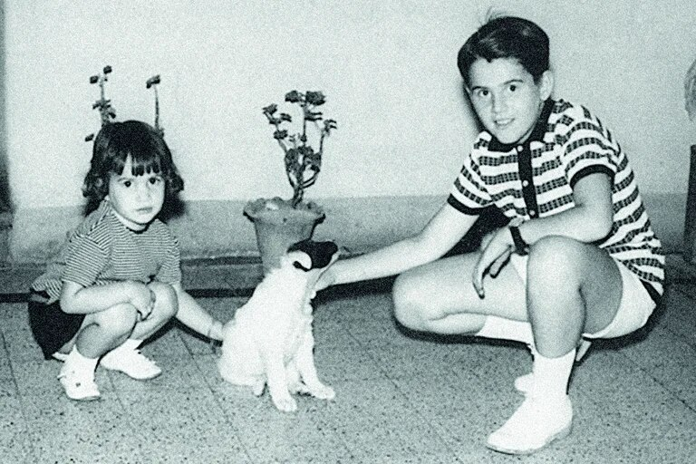
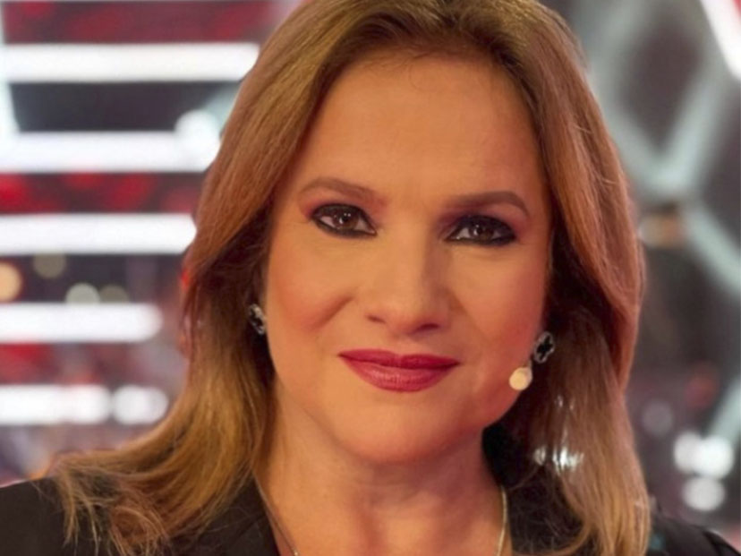
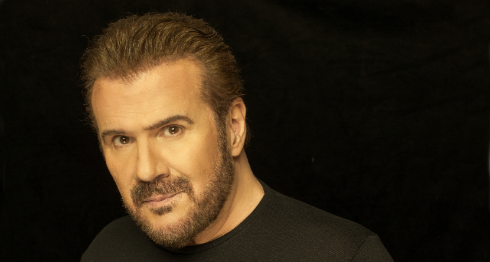

Sobre ellos
Su niñez
Los hermanos Galan nacieron en Buenos Aires, aunque con frecuencia realizaban viajes a España. Desde el inicio sus padres fueron quienes los apoyaron esta carrera musical. Lo gracioso es que en ese entonces, los hermanos no querian cantar juntos.
Inicios musicales

Los hermanos Galán se destacaron por componer e interpretar de una manera muy distinta a lo que se venía haciendo hasta entonces, mezclando el teatro con la canción; acompañados de un lenguaje dialogado, directo y cotidiano.
Lucia Galan
María Graciela Galán Cuervo (Buenos Aires; 23 de mayo de 1961), conocida artísticamente como Lucía Galán, es una cantante y actriz argentina miembro del dúo. Estuvo casada dos veces, tiene una hija, Rocío Luna Hazán Galán, fruto del primero.
Joaquin Galan
Joaquín Roberto Galán Cuervo (Buenos Aires, 21 de julio de 1955) es un cantante, actor, compositor, autor, productor y empresario argentino. Joaquín inició su carrera junto al grupo Karmaba y luego en Luna de Cristal.